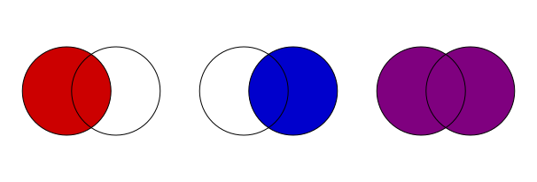
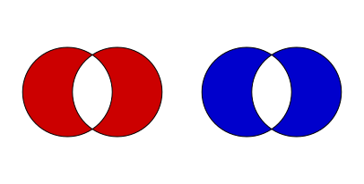
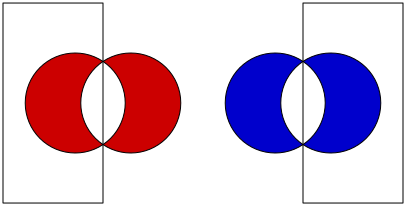
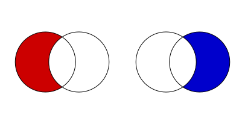
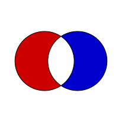
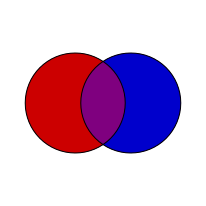
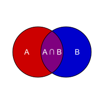

4. Venn Diagrams
In this section we are drawing Venn diagrams.
First we will set the size of the image and the window in user coordinates.
Let’s begin by drawing two circles with radius 5.
> (require metapict) > (set-curve-pict-size 200 200) > (def x 10) > (def -x (- x)) > (curve-pict-window (window -x x -x x))
Now let’s pick some nice colors: The call
> (def r 5) > (def s (/ r 1.8)) > (def c1 (circle (pt (- s) 0) r)) > (def c2 (circle (pt s 0) r)) > (draw c1 c2)
(color-med f color1 color2)
interpolates between the two colors.Let’s also pick a font:
> (def red (color-med 0.2 "red" "black")) > (def blue (color-med 0.2 "blue" "black")) > (def mag (color-med 0.5 "red" "blue"))
We are now ready to tackle the problem of filling the inside of both circles. The function is used to fill a curve. The pen is used for outlines and the brush is used for areas. Setting will fill the inside with a solid color.
> (def font (make-similar-font (new-font) #:size 15 #:face "Arial"))
The rule used to determine whether a point \(P\) is in the interior:
> (beside (draw (brushcolor red (fill c1)) c1 c2) (draw (brushcolor blue (fill c2)) c1 c2) (draw (brushcolor mag (fill c1 c2)) c1 c2)) 
Given a point \(P\), consider a ray from \(P\) towards infinity.
For each intersection between the ray and the curve(s),
determine whether the curve crosses right-to-left or left-to-right.
Each right-to-left crossing counts as +1 and each left-to-right crossing as -1.
If the total sum of the counts is non-zero, then the point will be filled.
If we alter the orientation of the curve
c2
(the second circle) then the points in the intersection of the two disks will sum to zero - so they won’t be filled.We use to reverse the orientation of a curve.
We want to fill the part of
> (def rev curve-reverse)
> (beside (draw (brushcolor red (fill c1 (rev c2))) c1 c2) (draw (brushcolor blue (fill (rev c1) c2)) c1 c2)) 
c1
that lies outsidec2
with red. Now too much is filled. If we clip out the left part, we have what we need. We introduce two rectangles and .
> (def left (rectangle (pt -x -x) (pt 0 x))) > (def right (rectangle (pt 0 -x) (pt x x)))
> (beside (draw (brushcolor red (fill c1 (rev c2))) c1 c2 left) (draw (brushcolor blue (fill (rev c1) c2)) c1 c2 right)) 
The function clips the part of the pict that is inside the curve.
Note that we could have used and for the clipping instead.
> (def left (rectangle (pt -x -x) (pt 0 x))) > (def right (rectangle (pt 0 -x) (pt x x)))
> (beside (draw (clipped left (brushcolor red (fill c1 (rev c2)))) c1 c2) (draw (clipped right (brushcolor blue (fill (rev c1) c2))) c1 c2)) 
Anyways, combining these two parts we get:
If we fill the entire figure with magenta first, and then draw these two parts on top, we get:
> (draw (clipped left (brushcolor red (fill c1 (rev c2)))) (clipped right (brushcolor blue (fill (rev c1) c2))) c1 c2) 
Let’s end the example by adding labels to the figure.
> (draw (brushcolor mag (fill c1 c2)) (clipped left (brushcolor red (fill c1 (rev c2)))) (clipped right (brushcolor blue (fill (rev c1) c2))) c1 c2) 
> (text-color "white" (with-font font (draw (brushcolor mag (fill c1 c2)) (clipped left (brushcolor red (fill c1 (rev c2)))) (clipped right (brushcolor blue (fill (rev c1) c2))) c1 c2 (label-cnt "A" (pt (- r) 0)) (label-cnt "B" (pt r 0)) (label-cnt "A ∩ B" (pt 0 0))))) 
Let’s try and the same with three circles.
> (require metapict racket/list) > (set-curve-pict-size 35 35) > (def x 10) > (def -x (- x)) > (curve-pict-window (window -x x -x x)) > (def red (color-med 0.2 "red" "white")) > (def blue (color-med 0.2 "blue" "white")) > (def green (color-med 0.2 "green" "white")) > (def gray (color+ (color* 0.33 red) (color+ (color* 0.33 green) (color* 0.33 blue)))) > (def mag (color-med 0.5 "red" "blue")) > (def rg (color-med 0.5 "red" "green")) > (def bg (color-med 0.5 "blue" "green")) > (def r 5) > (def s (/ r 1.8)) > (def c1 (circle (pt (- s) 0) r)) > (def c2 (circle (pt s 0) r)) > (def c3 (circle (pt 0 (* -1 r)) r)) > (def rev curve-reverse) > (def r1 (rev c1)) > (def r2 (rev c2)) > (def r3 (rev c3))
> (define diagrams (for*/list ([Mag (list mag "white")] [Rg (list rg "white")] [Bg (list bg "white")] [Red (list red "white")] [Blue (list blue "white")] [Green (list green "white")] [Gray (list gray "white")]) (draw (clipped c1 (clipped c2 (brushcolor Mag (fill c1 c2)))) (clipped c1 (clipped c3 (brushcolor Rg (fill c1 c3)))) (clipped c2 (clipped c3 (brushcolor Bg (fill c2 c3)))) (clipped c1 (brushcolor Red (fill c1 r2 r3))) (clipped c2 (brushcolor Blue (fill c2 r1 r3))) (clipped c3 (brushcolor Green (fill c3 r1 r2))) (clipped c1 (clipped c2 (clipped c3 (brushcolor Gray (fill c1))))) c1 c2 c3)))
> (define (rows xs) (if (empty? xs) '() (cons (take xs 16) (rows (drop xs 16))))) > (apply beside (apply map above (rows diagrams)))